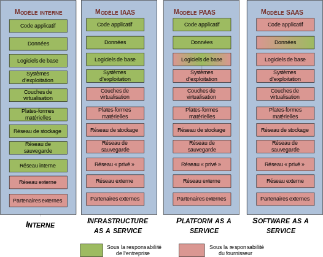

On distingue habituellement quatre grands modèles de service :
Software as a Service (SaaS);
Data as a Service (DaaS);
Platform as a Service (PaaS);
Infrastructure as a Service (IaaS);
Le Cloud

Le Cloud
On distingue trois modèles de déploiement de cloud computing :
les clouds privés internes, gérés en interne par une entreprise pour ses besoins ;
les clouds privés externes, ou privatifs, dédiés aux besoins propres d'une seule entreprise, mais dont la gestion est externalisée chez un prestataire ;
les clouds publics, gérés par des entreprises spécialisées qui louent leurs services à de nombreuses entreprises.
Le Cloud
Les Avantages du cloud :
Externalisé l'administration des serveurs
Possibilité des scalabilité lié à la demande
L'accès des utilisateurs est effectué la plupart du temps grâce à un navigateur Web.
Haute disponibilité
L'application est consltable depuis le monde entier via Internet
Mobilité
L'évolution de l'informatique va de plus en plus vers des équipements qui nous suivent :
Accroissement des portables dans les années 2000
Massification de l'offre réseau sans fils (GSM, GPRS, Edge, Wifi, 3G, WiMAX, 4G)
Explosion des Smart-phones (74% de croissance en 2011)
Création des Tablettes puis des Phablettes
Apparition d'un modèle 100% connecté
Enrichissement de lineraction utilisateur (multi-touch, WebCam, GPS, Accéléromètre)
Développement IOS / Android
Malheureusement le modèles est morcelé :
Symbian OS
Bada (5.3 %)
Windows Mobile (4 %)
Windows Surface RT
BlackBerry OS (4.7 %)
Apple Ios (25 %)
Android (58 %)
Gingerbread (44 %)
Ice Cream Sandwich (28 %)
Jelly Bean (16%)
Agnosticité du code
Les modèles de développements sont incompatibles :
Objective C sur IOS
Java sur Android et BlackBerry
.Net sur Windows Mobile
C sur Symbian OS
Les modèle traditionnel n'ont plus cours.
Flash ne fonctionne pas ni Sur IOS, ni sur Android 4.1 (Jelly Bean)
Pas de Java sous IOS
Agnosticité du code
Une solution (Miracle ?) existe :
Agnosticité du code
La mise en place d'une infrastructure type
coté client :
d'HTML5
CSS3
Framework JavaScript
Agnosticité du code
coté serveur :
Java
Node JS
.Net
...
Agnosticité du code
pour la communication entre le client et le serveur :
des services de type Rest
pour la communication entre services distribué :
des services de type Rest ou SOAP
permette de répondre de manière universelle sur les différentes plates-formes.
Agnosticité du code
Un # ou un Bémole
Le soucis est qu'il faut toujours vérifer la compatibilités des fonctionnalitées spécifiques comme le multi-touch, L'accès au resources du système (WebCam, GPS, ....)
ainsi que le rendu dans les différentes résolutions (Téléphones, Phablettes, Tablettes, PC).
Conclusion
Le modèle d'infrastructure distribué sur le Cloud accèssible de manière multi canal :
PC
Tablette
Mobile
est devenu une réalitée incontournable.
Les bons choix doivent être fait pour péréniser la solution retenue.